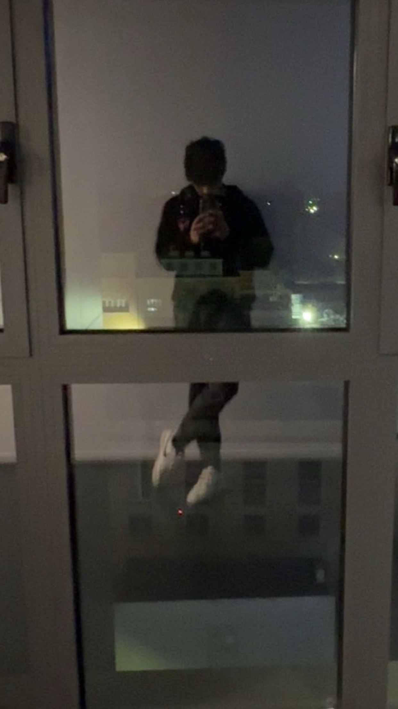

Vansh Singh
Hallo, ik ben Vansh, een 19-jarige die recentelijk zijn middelbare
school heeft afgerond. Na mijn oorspronkelijke keuze voor
wetenschappen-wiskunde, groeide mijn interesse in informatica en
besloot ik over te stappen naar boekhouden-informatica. Mijn
fascinatie voor IT begon al op jonge leeftijd. Met mijn eerste
laptop begon ik te gamen, maar al snel begon ik me te verdiepen in
de hardware en had ik mijn eerste project, mijn eigen computer
maken.
Terwijl mijn kennis groeide, begon ik me ook te verdiepen in
softwareontwikkeling. Hoewel ik ben begonnen met Python, focus ik me
momenteel voornamelijk op front-end ontwikkeling, met als doel om
een studentenjob te vinden tijdens mijn academische jaar aan
Uhasselt. Ik ben vastbesloten om mijn passie voor IT te volgen en
hoop ooit iets groots te bereiken in de IT-wereld.
Contacteer mij: svansh5321@gmail.com